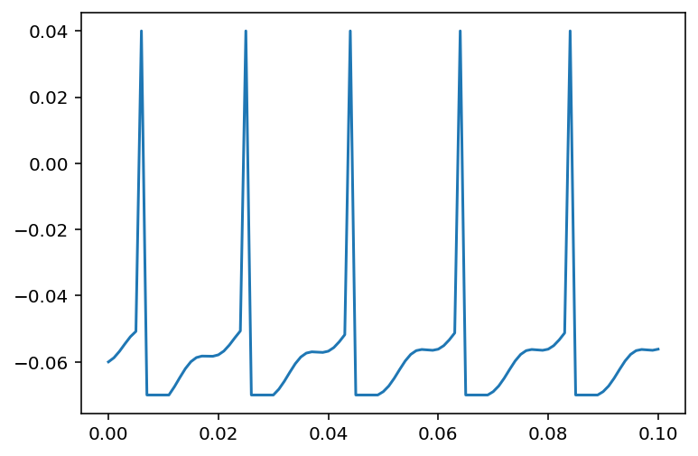
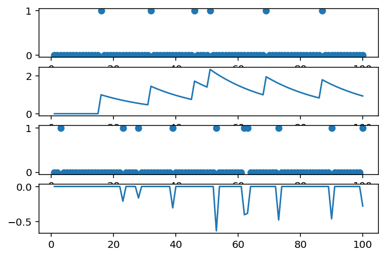

Neuromorphic Spiking Algorithms
Modeling biological neuron dynamics for power-efficient hardware.
The Concept
Neuromorphic systems maximize hardware efficiency by replacing standard "always-on" circuits with event-driven architectures. By mimicking the brain, these systems only consume and transmit power when specific energy thresholds are met, drastically reducing baseline power draw.
Leaky Integrate-and-Fire (LIF)
To capture biological voltage accumulation, I simulated a Leaky Integrate-and-Fire model. The system continually integrates incoming current but naturally dissipates, or "leaks," voltage during periods of inactivity. As shown in the plot below, once the accumulated voltage breaches a strict threshold, the system fires a discrete energy spike and immediately enters a refractory period to reset the cycle.

Spike-Timing-Dependent Plasticity (STDP)
To replicate biological learning, I implemented an STDP algorithm that dynamically adjusts connection strengths based on exact spike timing. If an input spike arrives just before an output spike, the connection weight increases. If the sequence is reversed, the connection weakens. The weight adjustment curves plotted below illustrate how the network automatically optimizes its own data pathways based entirely on timing.
